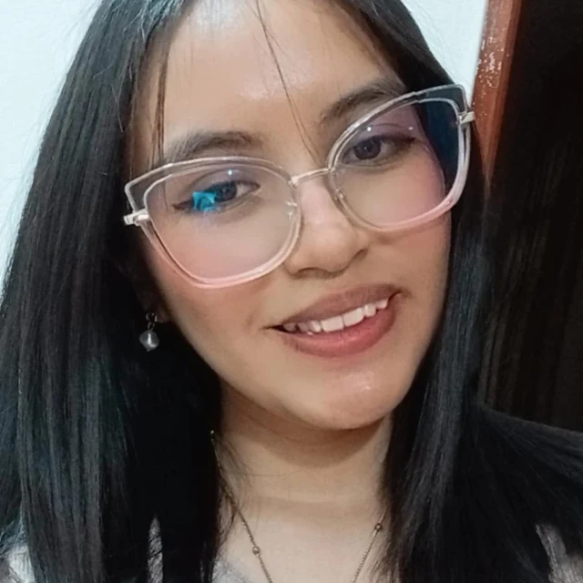
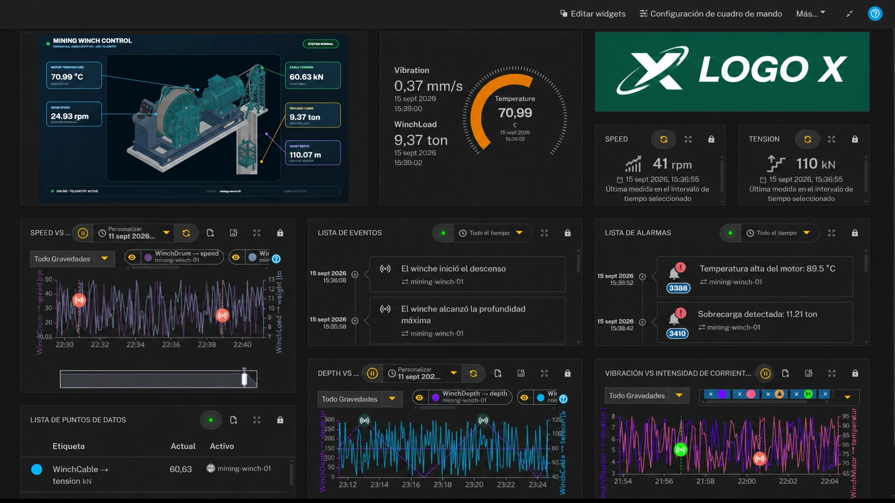
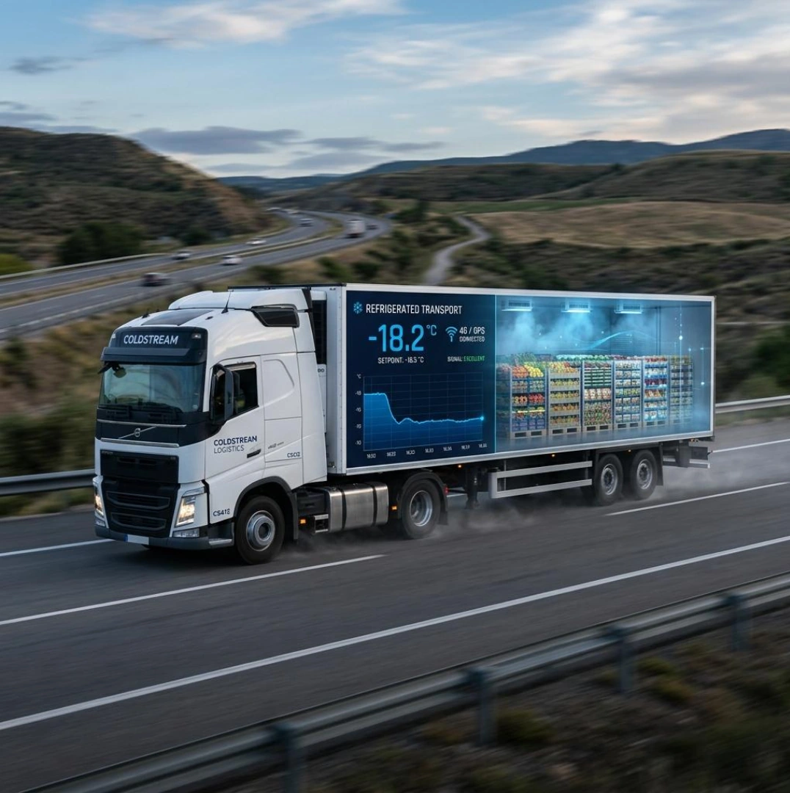
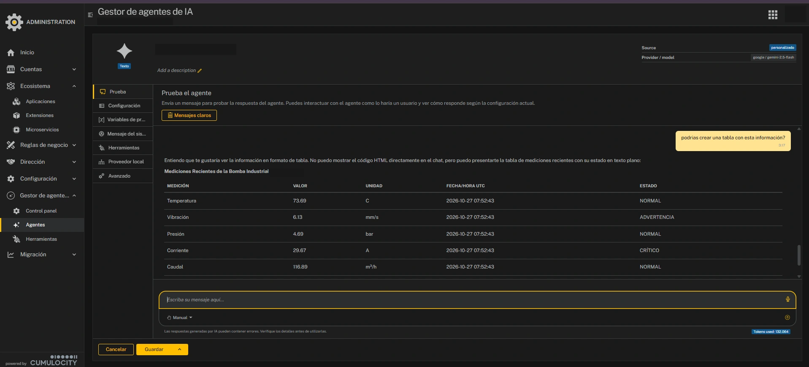
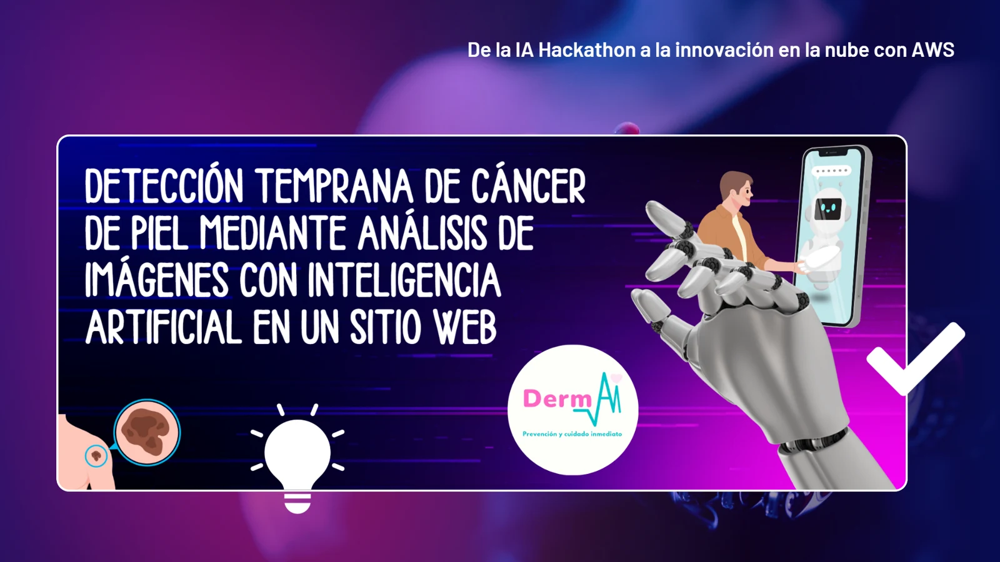
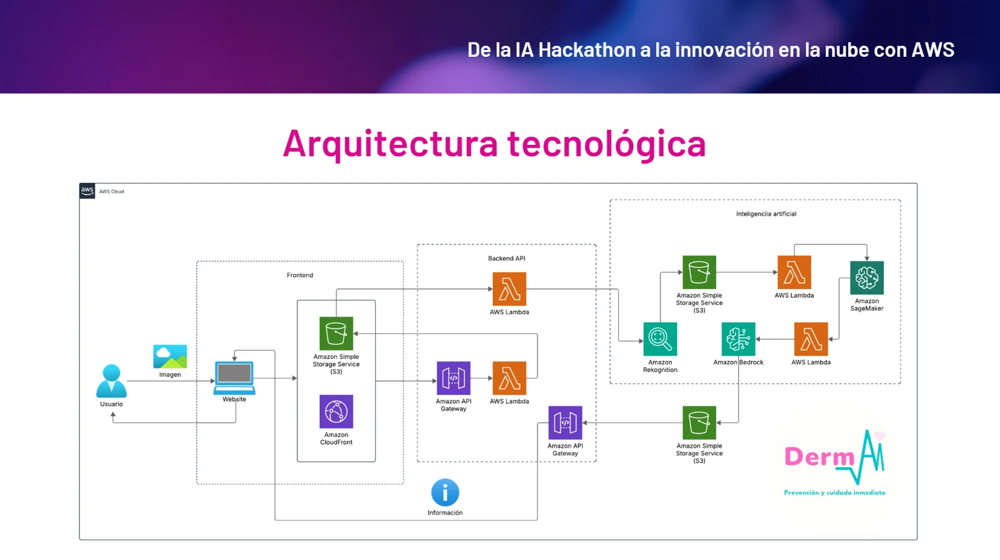
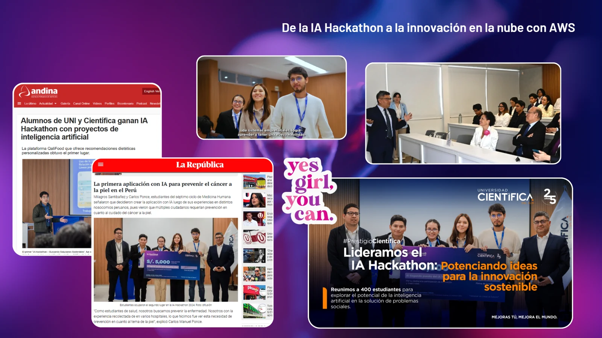

Integraciones Java
Desarrollo backend e integración de servicios empresariales del sector financiero.
JavaSpring BootSoftware Developer | Industrial IoT & SCADA | Cloud Technologies. Conecto sistemas, datos y tecnología para transformar ideas en soluciones digitales.
Explorar proyectos ↗Proyecto colaborativo en GitHub ↗✦ ✦ ✦ ✦ ✦ ✦ ✦

Soy desarrolladora de software con experiencia en soluciones web, integración de sistemas y tecnologías industriales. Actualmente trabajo con Cumulocity IoT, desarrollando demostraciones de monitoreo, visualización de datos y gestión de alarmas. Me apasiona conectar el software con aplicaciones reales, explorar la inteligencia artificial y la computación en la nube.
Desarrollo backend e integración de servicios empresariales del sector financiero.
JavaSpring BootDemostraciones de monitoreo de activos industriales, telemetría, dashboards y alarmas con Cumulocity IoT.
CumulocityRESTMigración de interfaces, configuración y programación de condiciones de alarmas industriales.
WinCC OACTRLDesarrollo web institucional y diseño de interfaz para un asistente de IA.
WordPressJavaScriptDesarrollo y personalización de interfaces web para una empresa de tecnología. Referencia al sitio público; no se comparte código propietario.
HTML / CSSDiseño webProyecto colaborativo de desarrollo frontend.
FrontendDesarrollo integral del sitio web institucional de un centro de ginecología y obstetricia, incluyendo la presentación de servicios, equipo profesional y acceso a la reserva de citas.
Desarrollo webSitio institucionalConfiguración y pruebas de agentes de IA para consultar mediciones industriales y presentar estados operativos en lenguaje natural.
Cumulocity AI Agent ManagerGemini
Visualización de temperatura, velocidad, tensión, carga y profundidad; tendencias, eventos y alarmas en Cumulocity IoT. Captura de demostración con marca sustituida.
Ampliar imagen ↗
Caso de uso de IoT para monitoreo de transporte refrigerado. Imagen conceptual ilustrativa, no una captura del sistema.
Ampliar imagen ↗
Consulta de temperatura, vibración, presión, corriente y caudal mediante un agente de IA. Captura editada para ocultar identificadores internos.
Ampliar imagen ↗Material demostrativo. Capturas editadas para presentación profesional. Publicar únicamente con autorización del titular del material. Sin enlaces a plataformas privadas ni credenciales de acceso.

Participé en el desarrollo colaborativo de un prototipo web de inteligencia artificial orientado al análisis de imágenes de lesiones cutáneas y a la identificación temprana de posibles riesgos, con especial interés en comunidades rurales.
Premio de equipo: S/ 5,000, según el material de premiación. Proyecto interdisciplinario de Ingeniería y Medicina de la Universidad Científica del Sur.
Prototipo de investigación; no es una herramienta clínica validada ni sustituye una evaluación médica.
AWSAI / MLServerless
Diseño presentado por el equipo: Amazon S3, CloudFront, API Gateway, Lambda, Rekognition, SageMaker y Bedrock. Pulsa para ampliar.

Segundo lugar en la IA Hackathon 2024 y cobertura pública del proyecto.